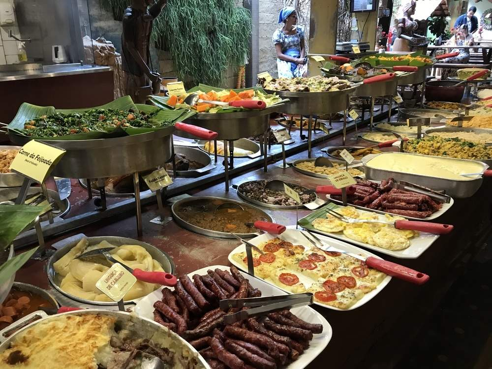

Muito importante pensar em não só manter o cliente pela vista panorâmica, mas também pelo estômago; por isso existem vários restaurantes na beira mar que já estão juntos de hotéis.
Chefs oferecem pratos com ingredientes da região para os turistas interessados em uma experiência gastronômica; com comidas, decorações e até cachaças típicas do nordeste.

Estabelecimentos costumam apresentar um ambiente rústico e uma decoração tipicamente nordestina. Coisas que costumam atrair a curiosidade dos clientes.